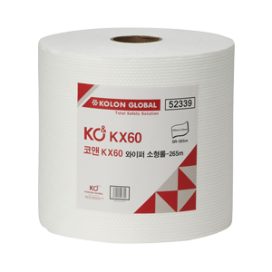

홈
>
사업분야
>
상사
상사
안전
SAFETY EQUIPMENT 'KOAN'안전용품 브랜드 KOAN은 다양한 현장 근로자들의 안전을 지키는 안전용품을 유통하고 있습니다. '안전의 일상화, 일상의 안전화'를 모토로 일상 생활과 같은 안전함을 달성하기 위해 KOAN은 고객의 NEEDS에 맞는 제품 개발, 선제적 기술 트렌드 적용 등을 통해 시장을 선도하고 있습니다.
코오롱 글로벌의 첫 글자를 영문화
코오롱 글로벌의 열린 정신과 추구하는 가치
종합 안전 브랜드 ‘KOAN’
KOAN은 산업 현장 전체를 아우르는 TOTAL SAFETY 브랜드를 지향하며, 이를 위해 다양한 제품을 개발 및 판매하고 있습니다. 중국을 비롯한 해외 주요 공급선과 국내 공급선을 통해 안전화, 안전벨트, 보안경, 산업용 와이퍼 등 다양한 아이템을 취급하고 있으며, 지속적인 신제품 개발을 통해 모두가 안전한 산업 현장을 이룩하는데 최선을 다하고 있습니다
공식 홈페이지 가기BUSINESS ITEM
-
01. 안전화
- 01. 안전화
- 코오롱글로벌 안전화는 국내 안전화 시장에서 확고한 입지를 다지고 있습니다. 건설 및 산업 현장 노동자들이 반드시 착용해야 하는 안전화는 사용자의 발을 보호하기 위한 토캡과 내답판 으로 구성됩니다. 코오롱의 안전화는 내구성과 안전성, 편안한 착용감을 목표로 제품을 개발 하며, 사용자의 편의를 위해 다양한 신제품 개발에 앞장서고 있습니다. ‘KOAN’ 안전화는 우 수한 제품 포트폴리오와 고객 친화적 판매 정책을 통해 대한민국 전국을 대상으로 활발한 판 매활동을 이어가고 있습니다.
-
02. 안전 벨트
- 02. 안전 벨트
- 산업용 안전벨트는 현장 근로자의 추락을 방지하는 보호구로 착용자의 생명과 가장 밀접한 관 련이 있는 제품입니다. 작업자의 추락사를 방지하는 안전벨트는 주로 높은 곳에서의 작업이 많은 건설 현장에서 사용되며 제품의 우수성이 가장 중요한 보호구 중 하나입니다. ‘KOAN’ 안전벨트는 제품의 안전성, 안정성, 우수성을 인정받아 국내 여러 건설현장에 제품이 등록되 어 판매되고 있습니다. 산업 현장 내 안전사고 예방이 강조되는 최근 트렌드에 맞춰 ‘KOAN’ 안전벨트는 착용자의 안전이 최우선으로 고려된 제품을 생산해 판매하고 있으며, 다양한 신기 술을 적용해 안전함과 편안함을 고루 갖춘 제품을 개발하고 있습니다.
-
03. 산업용 보안경
- 03. 산업용 보안경
- 산업용 보안경은 금속의 연마, 절단, 목재의 분쇄 및 가공 등 현장에서 발생하는 분진과 비래 물로부터 작업자의 시력을 지켜주는 보호구입니다. ‘KOAN’ 산업용보안경은 전통적인 보안 경의 역할에서 나아가 일상 생활 속에서도 사용할 수 있도록 디자인적 요소를 추가했습니다. 작업 현장에 맞춰 사용할 수 있는 다양한 렌즈, 사용자의 취향에 따라 고를 수 있는 여러가지 프레임 등 실 수요자의 다양한 Needs에 맞춰 개발한 ‘KOAN’ 산업용보안경은 앞으로도 현장 의 수요에 맞는 제품을 개발, 공급 할 예정입니다.
-

04. 산업용 와이퍼
- 04. 산업용 와이퍼
- 산업용와이퍼는 산업현장에서 사용되는 헝겊을 대체하는 친환경 펄프입니다. ‘ KOAN’ 와이퍼는 균일한 제품 성능, 인체 유해성 테스트를 완료한 친환경 성분으로 기존의 일회용 헝겊 대비 우수한 성능을 보유하고 있습니다. 또한, 와이퍼는 넓은 제품군을 토대로 신 선식품을 다루는 목장부터 화학제품을 생산하는 공장까지 다양한 현장에 판매되고 있습니다. ‘KOAN’ 와이퍼는 앞으로도 현장의 다양한 수요에 부응하기 위해 새로운 제품 개발에 매진할 예정입니다.
'KOAN' BEST ITEM
-

- 